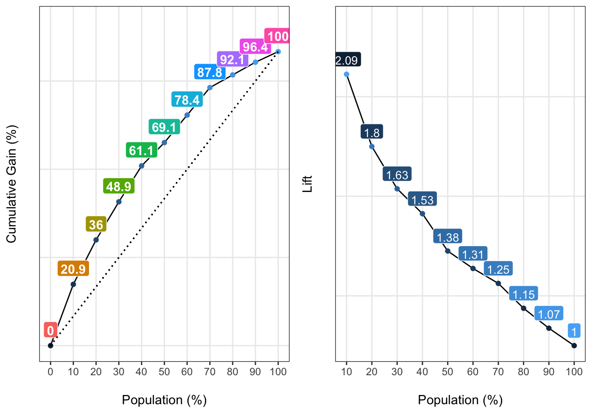

1 Measuring model performance

1.1 Cumulative Gains Charts with funModeling
Dataset: Heart disease dataset from the funModeling R package
1.2 Load dataset and examine its structure
data(heart_disease, package = "funModeling")
df <- heart_disease
df_status(df, print_results = FALSE) %>%
select(variable, type, unique, p_zeros) %>% tibble::tibble()
# A tibble: 16 × 4
variable type unique p_zeros
<chr> <chr> <int> <dbl>
1 age integer 41 0
2 gender factor 2 0
3 chest_pain factor 4 0
4 resting_blood_pressure integer 50 0
5 serum_cholestoral integer 152 0
6 fasting_blood_sugar factor 2 85.2
7 resting_electro factor 3 49.8
8 max_heart_rate integer 91 0
9 exer_angina integer 2 67.3
10 oldpeak numeric 40 32.7
11 slope integer 3 0
12 num_vessels_flour integer 4 58.1
13 thal factor 3 0
14 heart_disease_severity integer 5 54.1
15 exter_angina factor 2 67.3
16 has_heart_disease factor 2 0 1.3 Create machine learning model
fit_glm=glm(has_heart_disease ~ age + oldpeak, data=df, family = binomial)1.4 Get the scores for positive case
df$score=predict(fit_glm, newdata=df, type='response')1.5 Calculate performance metrics
gain_lift(data=df, score='score', target='has_heart_disease')
Population Gain Lift Score.Point
1 10 20.86 2.09 0.8185793
2 20 35.97 1.80 0.6967124
3 30 48.92 1.63 0.5657817
4 40 61.15 1.53 0.4901940
5 50 69.06 1.38 0.4033640
6 60 78.42 1.31 0.3344170
7 70 87.77 1.25 0.2939878
8 80 92.09 1.15 0.2473671
9 90 96.40 1.07 0.1980453
10 100 100.00 1.00 0.1195511